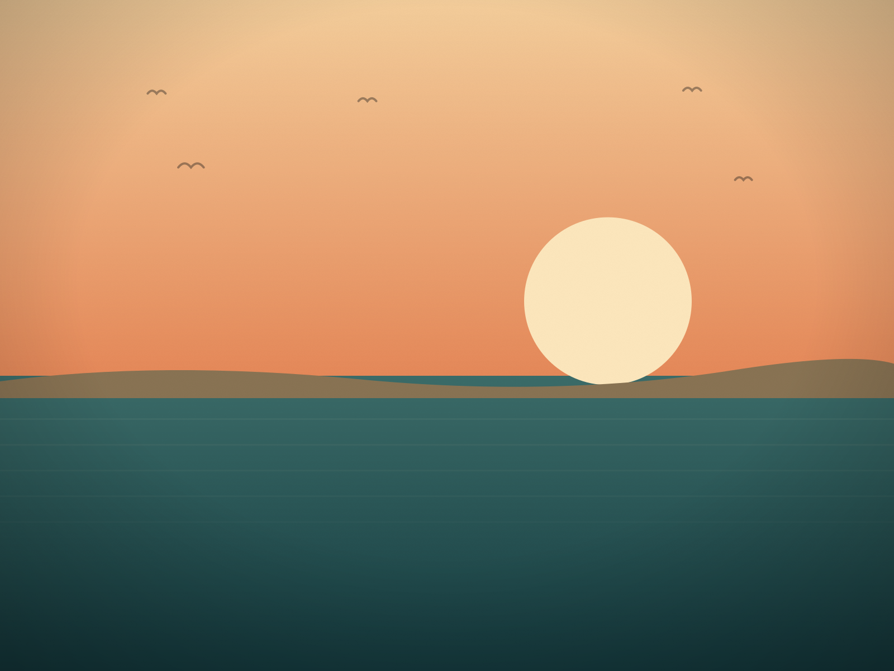

Summer is the hard season for driving onto Delaware's state park beaches to fish. The off-season, which started the Tuesday after Labor Day, is the easy one. Most of what changed is about when you can drive on. Almost nothing changed about what you need to carry, or how you drive once you are there.
What the permit is
A surf fishing vehicle permit lets a vehicle onto designated beaches at Cape Henlopen, Delaware Seashore and Fenwick Island state parks and at Beach Plum Island Nature Preserve, for one purpose: surf fishing. Permits are issued for the calendar year. They are valid only for two-axle vehicles licensed and registered to drive on public highways.
The purpose rule is strict. Vehicles on the designated beaches are for people actively surf fishing, and driving a permitted vehicle on the beach for anything other than getting to and from fishing is prohibited. The permit is not a pass to park on the sand.
What eased after Labor Day
Reservations. This summer, Delaware State Parks required advance reservations on weekends and holidays at the most popular drive-on beaches: Gordons Pond and Herring Point, Navy Crossing and Point Crossing at Cape Henlopen, and 3Rs at Delaware Seashore. That requirement ran from Saturday, May 23, through Labor Day, Sept. 7, between 8 a.m. and 4 p.m. The summer reservation window is over.
Off-peak permits. The off-peak surf fishing permit is the one that changes most. In the peak season it allows driving on to fish on weekdays only. In the off-peak season, the Tuesday after Labor Day to Memorial Day weekend, it is valid seven days a week, with no exclusions.
The Point. At the tip of Cape Henlopen, the oceanside beach reopened to anglers and beachgoers on Sept. 1 and the bayside on Oct. 1, after the annual closure for nesting and migrating shorebirds.
What does not change
The equipment rule is year-round. A surf fishing vehicle on state park beaches must carry a shovel, a jack, a tow rope or chain, a board or similar support for the jack, and a low-pressure tire gauge.
So is the driving rule. Vehicles must be driven with regard to existing and potential hazards, and never faster than 15 miles per hour.
And the swimming beaches stay off-limits to vehicles during summer day-use hours. That matters less in October than in July, but it is the same rule when the season turns again.
What this story does not cover
Two things on purpose. Permit prices are set in Delaware State Parks' published rates and fees, and are not repeated here. Fishing regulations themselves, including size and creel limits, are DNREC Division of Fish and Wildlife rules that change by species and season; check them before you keep a fish.
Sources: Delaware State Parks' surf fishing page (permits, designated beaches, vehicle and equipment requirements, the 15 mph limit, the off-peak season); DNREC's May 13, 2026 release on required reservations at the five most popular drive-on beaches (May 23 – Sept. 7, weekends and holidays, 8 a.m.–4 p.m.); DNREC's Aug. 25, 2026 release on The Point's reopening. Delaware Beach Finds did not drive the beaches for this story. Rules and closures can change; Delaware State Parks' current information is the authority.